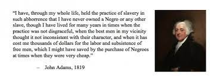

Stance on Slavery
* Home
* Ideal Economy
* Interpreting the Constitution
Adams was against slavery but was also against abolitionism
He wanted to end slavery in a gradual way
Adams also at the time wrongly belived that slavery was diminishing, while it was actually increasing.
